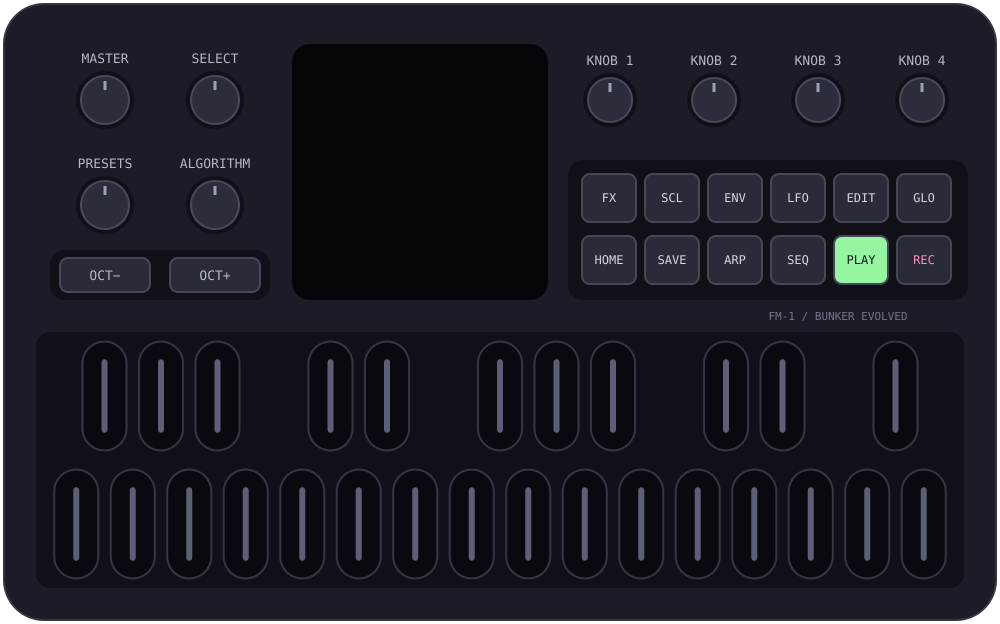

FREE AMBIENT FIRMWARE / M-VAVE FM-1
Let a little
world unfold.
Four layers of sound. A melody to follow.
Just enough surprise to make it your own.
Release 1.0 · Free & open source · Original ↔ Bunker update tested by the owner

 ACTUAL FIRMWARE DISPLAY / ILLUSTRATED PANEL
ACTUAL FIRMWARE DISPLAY / ILLUSTRATED PANELOPEN POSSIBILITIES.
AIR · MELODY · ROOT · SPARK
READY TO PLAY. YOURS TO EDIT.
COMPLETE MUSICAL STARTING POINTS
A DIFFERENT COLOUR IN EVERY KEY
01 / MEET YOUR NEXT QUIET OBSESSION
Listen. Then make it yours.
A guided introduction with calm English narration, actual firmware screens, and music from the C audio engine.
English narration · Optional captions · Rendered demonstration, not camera footage of a device. Watch on YouTube · Download film · Captions · Publication kit
02 / A FRIENDLY WAY TO FIND THE NEXT PHRASE
Choose a scale.
Give it a little GROW.
Set the key and scale. Pick a gentle variation or a fresh direction. Press OCT+ and listen. One track or all melodic tracks — your sound and mix stay yours.
Not quite it? OCT− undoes the last GROW step. The new phrase is locked while you decide.
Learn GROW in one minute →YOUR INSTRUMENT / YOUR NOTES
Make it yours.
One layer at a time.
Open the Chrome editor to shape your FM-1 over USB: sound recipes, notes, motifs and gentle variations in 32 scales.
Editor 0.1 · New browser component · Firmware 1.0 stays unchanged.
03 / FIND A PLACE TO BEGIN
Twenty-four worlds.
No two have to stay the same.
Real synthesis, rendered from the firmware's audio code. Each 16-second preview is a starting point. Open the instrument to change it and let it run.
Press play to listen. One preview plays at a time.
04 / THE SOUND IS STILL IN YOUR HANDS
From glass to grain.
Sixteen sound recipes for each musical role. All four tracks remain freely editable, with thirteen synthesis engines underneath.
Shape the engine, envelopes, LFO and effects. Replace a single note or play a chord into the sequencer. Save your sounds and complete compositions.
05 / MAKE SPACE FOR CHANGE
A phrase can wander.
You decide how far.
Seven EVOLVE processes add controlled variation to the real sequence. Set the chance and the number of loops between changes. Lock the phrase whenever you find something worth keeping.
WALK / ANSWER / ORBIT / MIRROR / BLOOM / BREATH / VOICE
Meet the seven processes →One panel. Six musical views.
- WORLD — load a complete composition.
- GROW — find a new phrase in your scale.
- SOUND — choose a voice and shape it.
- MOTIF — change the pattern and rhythm.
- EVOLVE — set movement, then let it happen.
- MIX — bring the four layers together.
06 / MADE TO BE PLAYED. OPEN TO BE UNDERSTOOD.
A small gift
to curious musicians.
Bunker Evolved builds on Felucca's synthesis, editors, storage and hardware support. The ambient library, musical front page and generative tools are Bunker's contribution.
The complete source, build instructions, credits and test results are available. No account, subscription or payment is required by the instrument.
Read the credits →Ready to explore?
Try the exact C program in the browser. For your FM-1, follow the installation guide and keep the recovery page nearby.
The owner completed the original → Bunker → original update cycle on an FM-1 and confirmed working audio and controls. Automated tests cover generation, storage, audio and update logic. See the release notes.